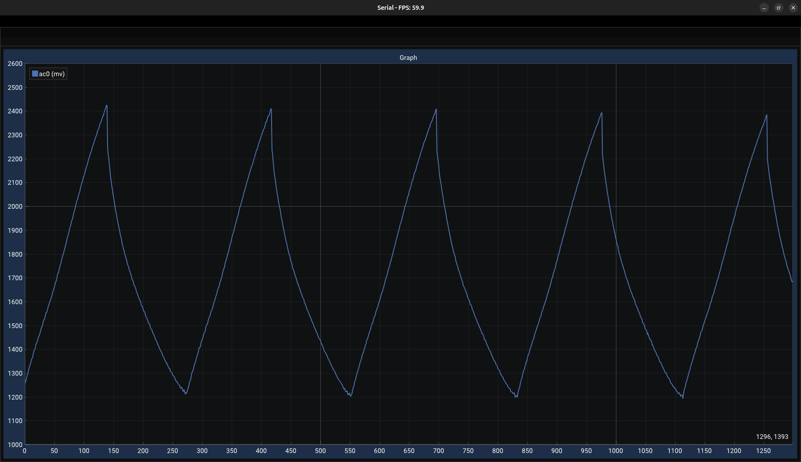
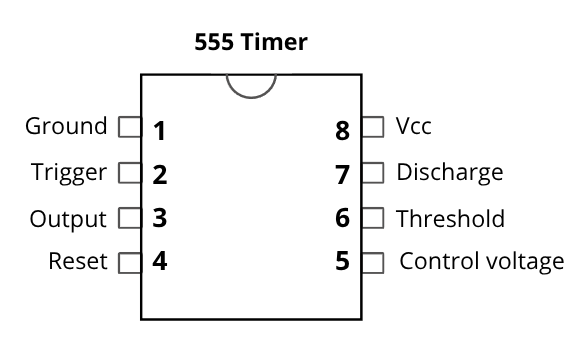
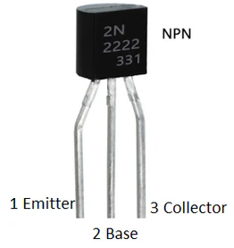

A Fading LEDs circuit using 555 Timer on Breadboard
A fading LEDs circuit
555 Timer
The 555 timer is an integrated circuit that outputs pulses. It’s configurable in astable multivibrator mode to run continuously and can be used as a timer, a clock, a square wave generator, an oscillator with Pulse Width Modulation and more.
In this circuit, it’s use as an analog sawtooth wave generator by drawing curent from the capacitor and feeding it into the transistor that buffer the signal to the LEDs. It’s a circuit I made by mistakes trying to learn about the 555. It’s shows the timing capacitor charge/discharge cycle. But it also load the capacitor using a transistor and LEDs which make the timing much harder to calculate.
Tools
General: Plier cutter, non-serrated long nose plier, wire stripper and multimeter. Here’s an image example for those tools
The multimeter is useful to capture voltage in your circuit and it can also be use to test the components before placing them on the board.
Power supply
Use a phone charger (switching power supply) or a 5V portable battery. Cut a USB cable and crimp a Dupont connector.
Waveform

Components
| Component | Description |
|---|---|
| Breadboard | Use a high-quality breadboard for reliable connections. This one is from Elegoo. |
| Solid wire | Use solid-core 22 AWG wire for a good fit on the breadboard. |
| 555 Timer |
|
| 470 µF electrolytic capacitor | Connected between GND and pins 2 and 6 to control the timing/fading cycle. |
| 1 kΩ resistor | Connected between Vcc and pin 7 as part of the timing logic. |
| 5 kΩ resistor | Connected between pins 6 and 7 as part of the timing logic. |
| NPN transistor (2N2222) |
|
| 0.1 µF ceramic capacitor | Placed between Vcc and GND to filter power supply voltage spikes. |
| 0.01 µF ceramic capacitor | Between GND and pin 5 of the 555 timer to stabilize internal voltage reference. |
| 330 Ω resistors (×6) | Connected between LEDs cathode (−) and GND to limit current. |
| Red LEDs (×6) | Connected in parallel to the transistor emitter. |
Pinout

